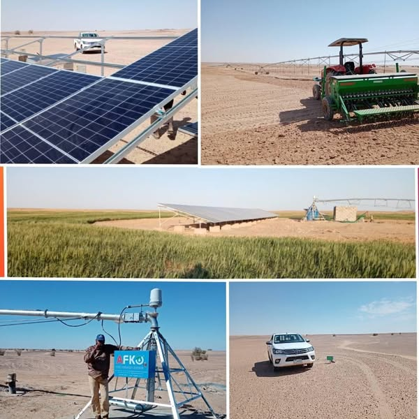
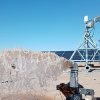
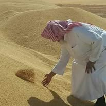
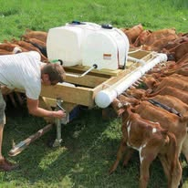
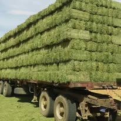
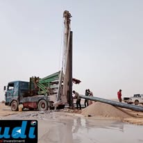
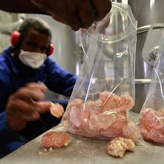

01
Agriculture
Productive agriculture, irrigation and agricultural development rooted in real operating environments.
FIELD

A Sudanese business group connecting local potential, capital, capability and markets.
Built in Sudan.
Designed for scale.
SUDI operates across strategic sectors where local resources and capabilities can be turned into productive, scalable value. The model is deliberately cross-sector: investment, agriculture, energy, trade, technology and business advisory work as connected parts of one ecosystem.
Productive agriculture, irrigation and agricultural development rooted in real operating environments.
Solar-powered systems that strengthen productivity, resilience and sustainable growth.
Connecting Sudanese products and capabilities with regional and global markets.
Technology, platforms and digital infrastructure built around measurable business outcomes.
Financial, operational and strategic capabilities that help organizations adapt, grow and scale.
Integrated agricultural production supported by solar-powered irrigation infrastructure. A practical example of how SUDI connects energy, water, agriculture and productive land.
Project reference ↗





Export activity connecting Sudanese products with Gulf markets, with the first referenced Gulf transaction in 2023.
A visible step in extending SUDI's operating footprint and building broader national presence.
Testing and operation of agricultural irrigation powered by solar energy in Northern State.
We do not see sectors in isolation.
We build the connections between them.
Find opportunities with strategic relevance and commercial potential.
Test fundamentals, economics, risk and execution requirements.
Bring together markets, partners, expertise and operating capability.
Turn a viable opportunity into an operating, scalable business.
Extend value across markets, sectors and long-term relationships.
Our perspective starts locally. Our ambition is not limited by borders.
Productive agriculture depends on energy, water, logistics and market access — not land alone.
SUDI Insights →The operational chain behind moving Sudanese products into regional markets.
SUDI Insights →Infrastructure and technology can turn constraints into long-term operating advantages.
SUDI Insights →For investment opportunities, strategic partnerships and business inquiries.
Start a WhatsApp conversation ↗